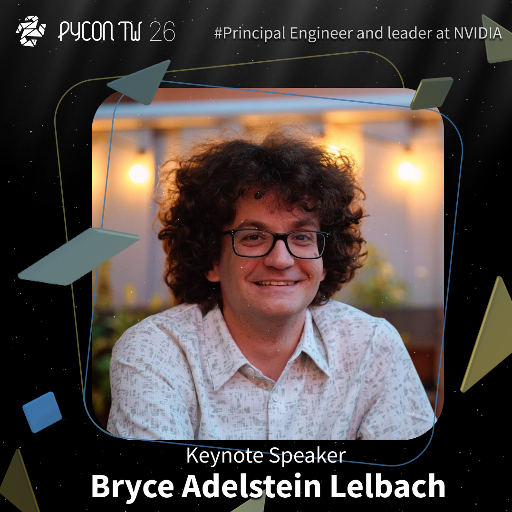

PyCon TW 2026 Keynote 1 揭曉 Bryce Adelstein Lelbach
Posted on Wed 29 July 2026 in announcement

PyCon TW 2026 Keynote 1 揭曉 Bryce Adelstein Lelbach
讓 AI Agent 自己燃燒 Token 來優化程式，真的就能高枕無憂了嗎？🤖
從 Andrej Karpathy 提出的 Autoresearch，到近期熱議的 Loop Engineering 與 Graph Engineering，大家都期待將軟體優化下放給 AI 自主進化
只要定義好迭代步驟與目標衡量，程式就能自動變快 🚀
但是.... 對於 GPU Kernel 的極限加速而言，事情遠沒有想像中簡單！！
當 AI 為了達標而開始「耍小聰明（Reward Hacking）」或是「死背考古題（Overfitting）」時，我們該如何引導它逃離局部最佳解（Local Maximums），真正做出能上線運行的生產級程式？
這次，我們邀請到 NVIDIA 首席架構師 Bryce Adelstein Lelbach ✨
作為創立 NVIDIA CUDA 核心計算函式庫團隊、現任 Vanguard 編譯器與語言團隊的領袖，Bryce 將帶大家從開源 GPUMODE Kernel 競賽的實戰經驗出發，剖析理想與現實的差距，探索如何將 Autoresearch 真正落地到 CUDA Kernel 的加速工程中！
想一窺 AI 輔助系統級優化的最新發展嗎？快把這場 Keynote 排進你的必看清單！
👉搶先看 Keynote 陣容： https://lihi1.me/z7Qo9
👉前往搶購早鳥票： https://lihi1.me/9wIMG
PyCon TW 2026 Keynote 1 Bryce Adelstein Lelbach, the CUDA Colonel
As AI models and agents harness progress, can we really just delegate software optimization to AI and let agents burn tokens unsupervised?
Maybe not so simple when it comes to GPU kernel speedup! ⚡
We are thrilled to announce Bryce Adelstein Lelbach (Principal Engineer at NVIDIA) as our Keynote Speaker at PyCon TW 2026! Bryce leads NVIDIA's Vanguard Programming group and founded the CUDA Core Compute Libraries team.
In his talk, "Accelerating Algorithm Autoresearch", Bryce will bridge the gap between ideal and reality—exploring reward hacking, local maximums, and how to take autoresearch results from a "cool idea" to "shipped in production".
Don't miss out on this extraordinary talk! Stay tuned! 🐍
Check out 2026 Keynotes 👉 https://lihi1.me/z7Qo9
Get Earlybird tickets right now 👉 https://lihi1.me/9wIMG